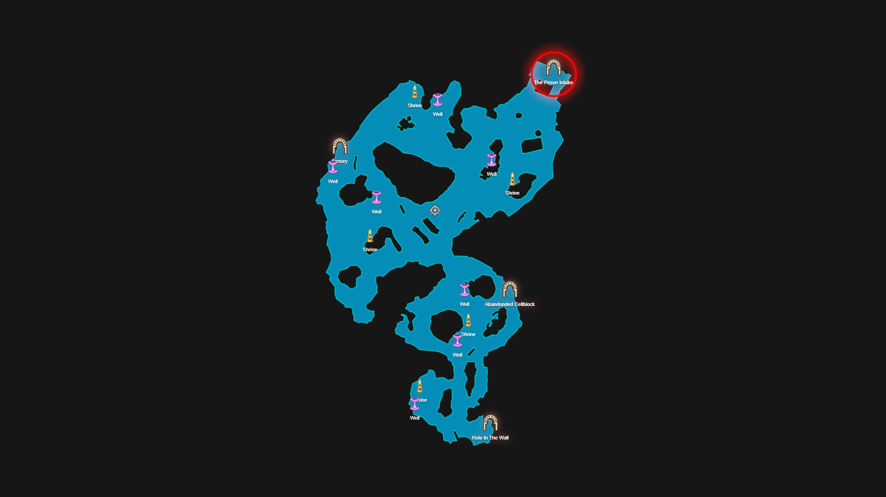
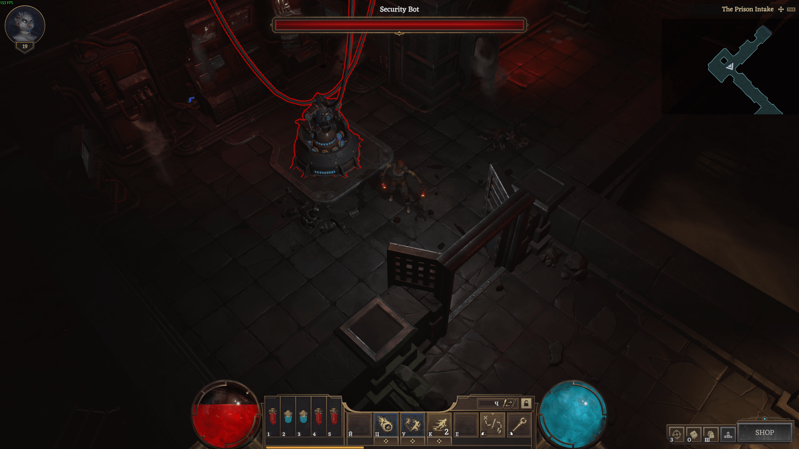
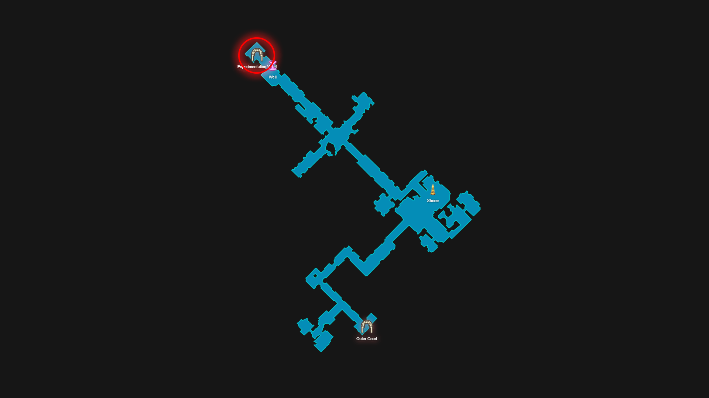
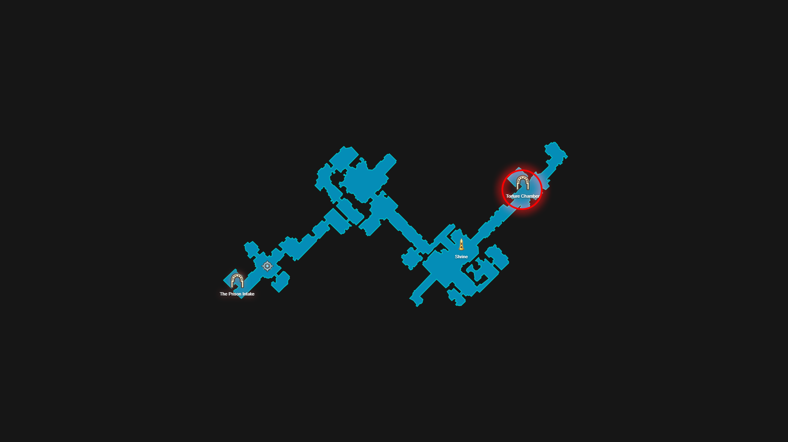
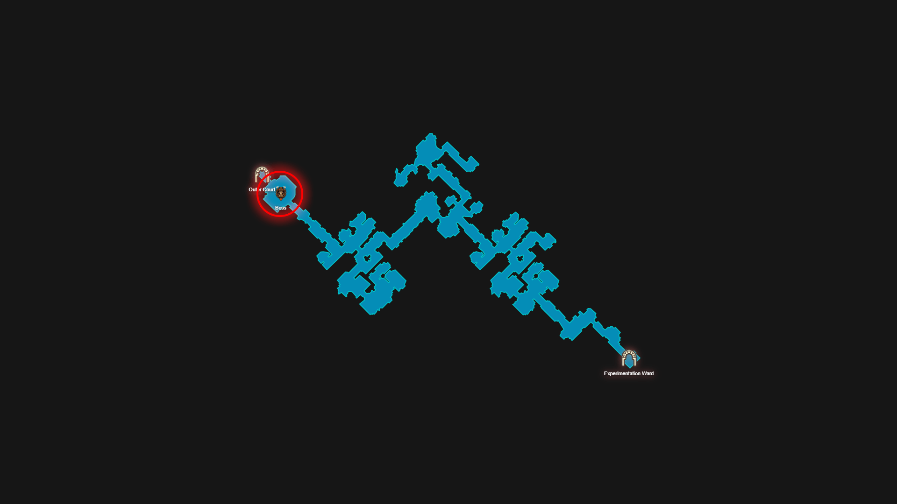
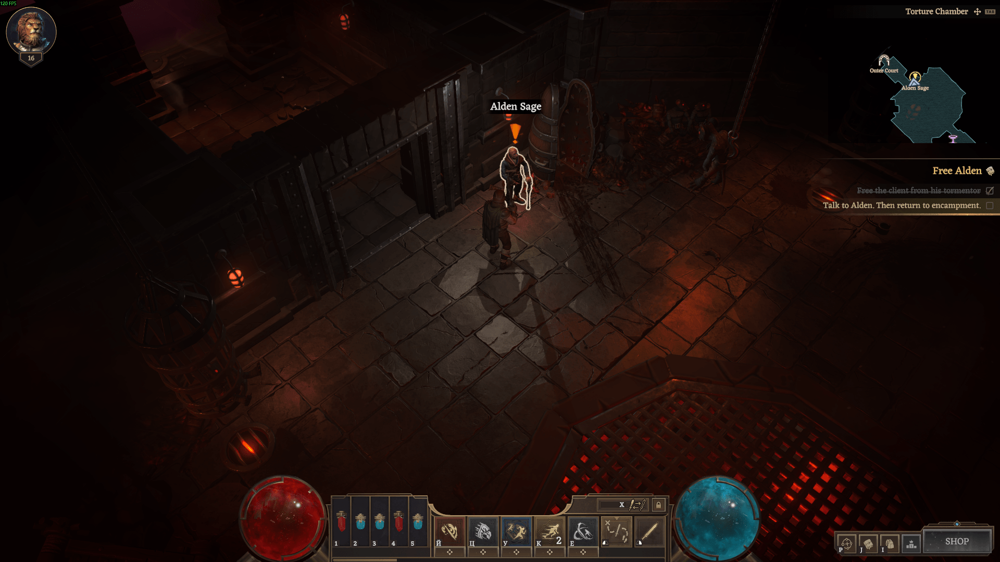
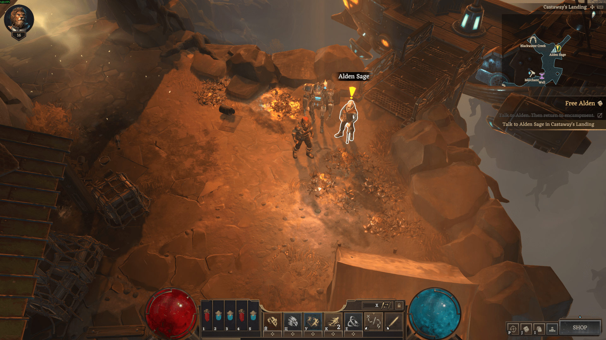

Free Alden
Time to free my client from Shadowgate Prison. Look for the entrance in the Outer Court beyond the Rugged Plains. Good luck.
How to complete
1. Step 1 — Enter Shadowgate Prison
The entrance to the prison is located in the Outer Court dungeon.

2. Step 2 — Disable the security system
Destroy the security bot.

3. Step 3 — Complete The Prison Intake dungeon
Go to Experimentation Ward dungeon.

4. Step 4 — Complete Experimentation Ward dungeon
Go to Torture Chamber dungeon.

5. Step 5 — Free the client from his tormentor
Complete the dungeon and fight the boss.

6. Step 6 — Talk to Alden, Then-return-to-encampment.

7. Step 7 — Talk to Alden Sage in Castaway's Landing
